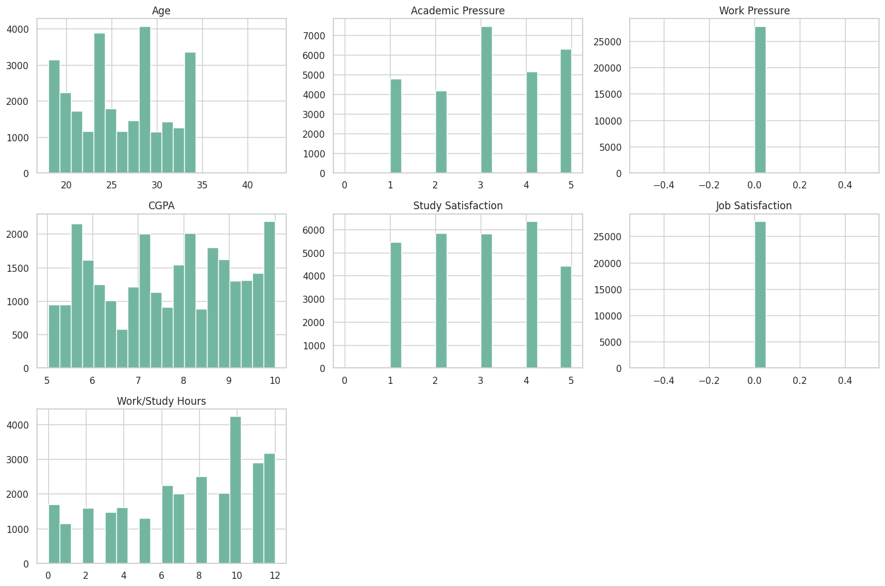

Dataset Analysis
Understanding the Student Depression Dataset
About Dataset
Student Depression Dataset: Analyzing Mental Health Trends and Predictors Among Students
Overview
This dataset compiles a wide range of information aimed at understanding, analyzing, and predicting depression levels among students. It is designed for research in psychology, data science, and education, providing insights into factors that contribute to student mental health challenges and aiding in the design of early intervention strategies.
Data Description
Format:
CSV (each row represents an individual student)
Features:
- ID: Unique identifier for each student
- Demographics: Age, Gender, City
- Academic Indicators: CGPA, Academic Pressure, Study Satisfaction
- Lifestyle & Wellbeing: Sleep Duration, Dietary Habits, Work Pressure, Job Satisfaction, Work/Study Hours
- Additional Factors: Profession, Degree, Financial Stress, Family History of Mental Illness, and whether the student has ever had suicidal thoughts
Target Variable:
- Depression_Status: A binary indicator (0/1 or Yes/No) that denotes whether a student is experiencing depression
Key Highlights
- Multifaceted Data: Integrates demographic, academic, and lifestyle factors to offer a comprehensive view of student wellbeing.
- Ethical Considerations: Data collection adhered to strict ethical standards with an emphasis on privacy, informed consent, and anonymization.
- Research & Practical Applications: Ideal for developing predictive models, conducting statistical analyses, and informing mental health intervention strategies in educational environments.
Usage & Potential Applications
- Academic Research: Explore correlations between academic pressures and mental health trends.
- Data Science Projects: Build predictive models to identify at-risk students based on various indicators.
- Policy Making: Inform the development of targeted mental health support programs within academic institutions.
Ethical Note
Due to the sensitive nature of the data, please ensure that any analysis or published results respect privacy and ethical guidelines. Users of this dataset should be mindful of the ethical implications when interpreting and sharing insights.
Dataset Samples
| id | Gender | Age | City | Profession | Academic Pressure | Work Pressure | CGPA | Study Satisfaction | Job Satisfaction | Sleep Duration | Dietary Habits | Degree | Have you ever had suicidal thoughts? | Work/Study Hours | Financial Stress | Family History of Mental Illness | Depression | |
|---|---|---|---|---|---|---|---|---|---|---|---|---|---|---|---|---|---|---|
| 0 | 2 | Male | 33.0 | Visakhapatnam | Student | 5.0 | 0.0 | 8.97 | 2.0 | 0.0 | 5-6 hours | Healthy | B.Pharm | Yes | 3.0 | 1.0 | No | 1 |
| 1 | 8 | Female | 24.0 | Bangalore | Student | 2.0 | 0.0 | 5.90 | 5.0 | 0.0 | 5-6 hours | Moderate | BSc | No | 3.0 | 2.0 | Yes | 0 |
| 2 | 26 | Male | 31.0 | Srinagar | Student | 3.0 | 0.0 | 7.03 | 5.0 | 0.0 | Less than 5 hours | Healthy | BA | No | 9.0 | 1.0 | Yes | 0 |
| 3 | 30 | Female | 28.0 | Varanasi | Student | 3.0 | 0.0 | 5.59 | 2.0 | 0.0 | 7-8 hours | Moderate | BCA | Yes | 4.0 | 5.0 | Yes | 1 |
| 4 | 32 | Female | 25.0 | Jaipur | Student | 4.0 | 0.0 | 8.13 | 3.0 | 0.0 | 5-6 hours | Moderate | M.Tech | Yes | 1.0 | 1.0 | No | 0 |
| 27686 | 140685 | Female | 27.0 | Surat | Student | 5.0 | 0.0 | 5.75 | 5.0 | 0.0 | 5-6 hours | Unhealthy | Class 12 | Yes | 7.0 | 1.0 | Yes | 0 |
| 27687 | 140686 | Male | 27.0 | Ludhiana | Student | 2.0 | 0.0 | 9.40 | 3.0 | 0.0 | Less than 5 hours | Healthy | MSc | No | 0.0 | 3.0 | Yes | 0 |
| 27688 | 140689 | Male | 31.0 | Faridabad | Student | 3.0 | 0.0 | 6.61 | 4.0 | 0.0 | 5-6 hours | Unhealthy | M.Tech | No | 5.0 | 2.0 | No | 0 |
| 27689 | 140690 | Female | 18.0 | Ludhiana | Student | 5.0 | 0.0 | 6.88 | 2.0 | 0.0 | Less than 5 hours | Healthy | Class 12 | Yes | 10.0 | 5.0 | No | 1 |
| 27690 | 140699 | Male | 27.0 | Patna | Student | 4.0 | 0.0 | 9.24 | 1.0 | 0.0 | Less than 5 hours | Healthy | BCA | Yes | 2.0 | 3.0 | Yes | 1 |
Note: Showing the first 5 and last 5 samples from the dataset (total rows: 27,901).
Data Visualization
Boxplot of Numerical Features

This boxplot visualization shows the distribution and statistical properties of numerical features in our dataset, helping identify outliers and understand the spread of values across different variables.
Distribution of Depression among Students
The distribution shows the overall prevalence of depression among students. This helps us understand the general mental health landscape in the student population.
Depression Distribution by Gender
This visualization reveals any gender-based patterns in depression rates, helping identify if certain genders face higher mental health challenges.
Depression Distribution by Sleep Duration
The relationship between sleep duration and depression highlights the crucial connection between sleep quality and mental health in students.
Depression Distribution by Degree

This chart shows how depression rates vary across different academic programs, indicating which fields of study might be associated with higher stress levels.
Depression Distribution by Dietary Habits

The correlation between dietary habits and depression demonstrates the impact of nutrition on mental health among students.
Depression Distribution by Profession

This visualization shows how different professional roles affect depression rates, particularly for students who are also working.
Depression Distribution by Family History of Mental Illness
The relationship between family history and depression rates helps understand the genetic and environmental factors in mental health.
Depression Distribution by Suicidal Thoughts

This critical visualization shows the correlation between depression and suicidal thoughts, highlighting the importance of mental health intervention.
Distribution of Numerical Features
The distribution of numerical features provides insights into the range and patterns of various quantitative factors affecting student mental health.
Feature Correlation Heatmap

The heatmap reveals the relationships between different features, helping identify which factors are most strongly associated with depression.
Data Preprocessing
-
Chuyển đổi kiểu dữ liệu: Các cột phân loại như
Gender, City, Profession, Dietary Habits, Degree, ... được chuyển
sang kiểu
categoryđể tối ưu bộ nhớ và xử lý. - Chuẩn hóa giá trị: Cột Sleep Duration được ánh xạ từ giá trị text sang số (ví dụ: 'Less than 5 hours' → 1, '5-6 hours' → 2, ...).
- Kiểm tra và xử lý missing values: Bộ dữ liệu không có giá trị thiếu nên không cần bổ sung hoặc loại bỏ dòng.
- Kiểm tra và loại bỏ dòng trùng lặp: Không có dòng dữ liệu trùng lặp.
- Xử lý outlier: Các dòng có giá trị ngoại lai được loại bỏ để tăng độ chính xác mô hình.
- Loại bỏ cột không cần thiết: Loại bỏ các cột như id, Profession, City,... không phục vụ cho việc dự đoán.
- Encoding biến phân loại: Sử dụng One-hot encoding cho các biến phân loại để đưa về dạng số.
- Chuẩn hóa dữ liệu: Sử dụng StandardScaler để chuẩn hóa các đặc trưng đầu vào về cùng phân phối chuẩn.